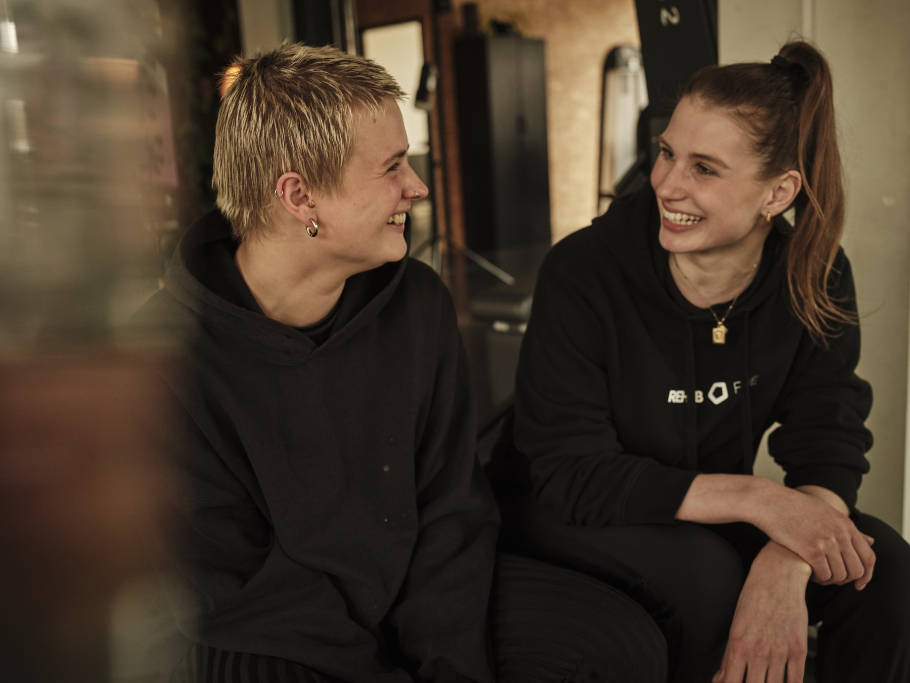
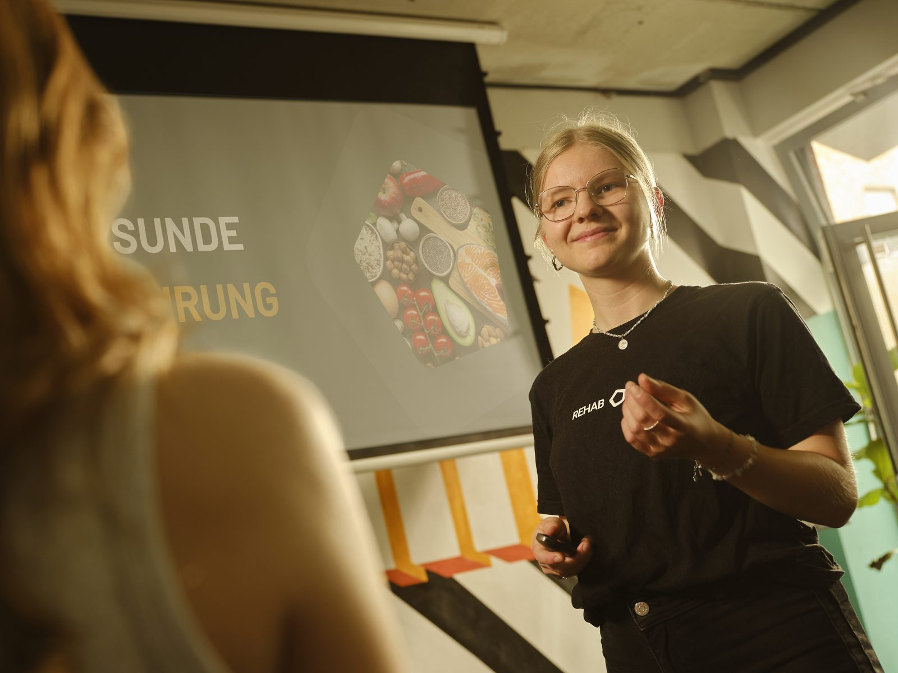
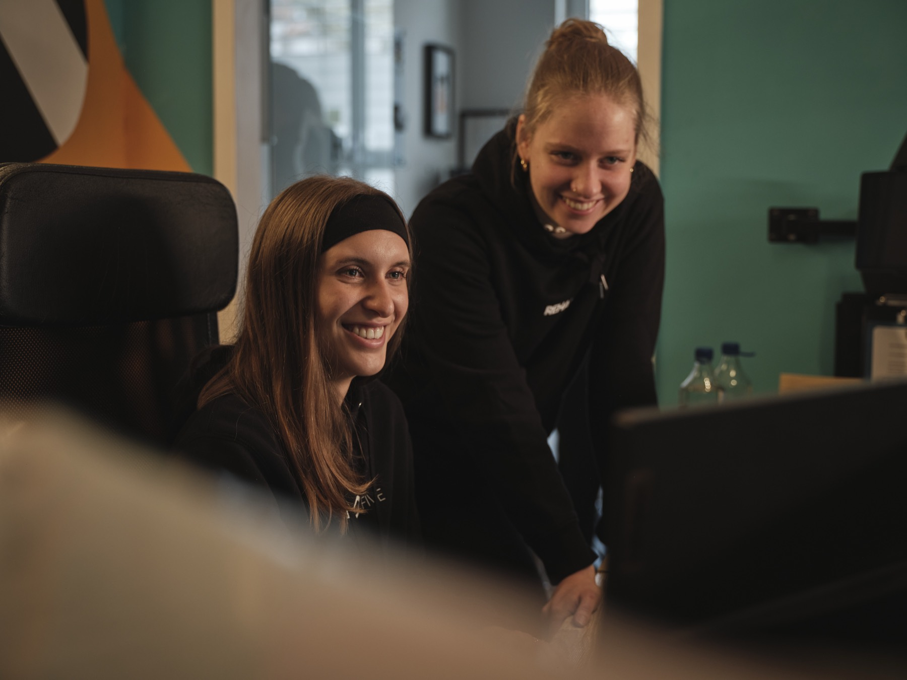
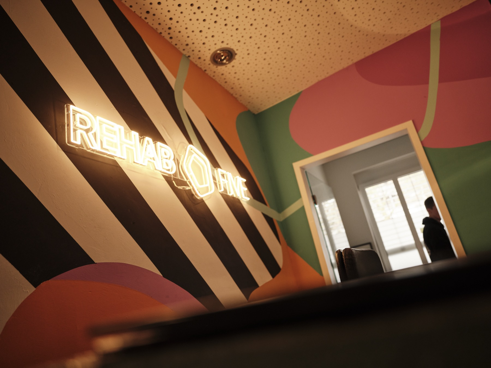
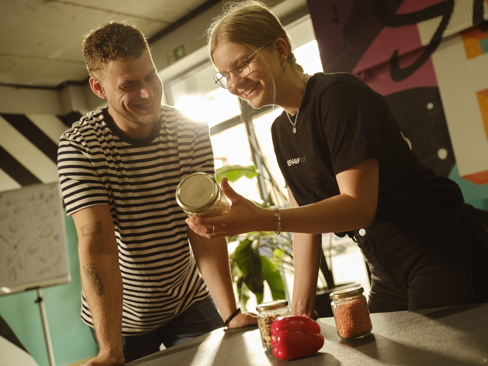
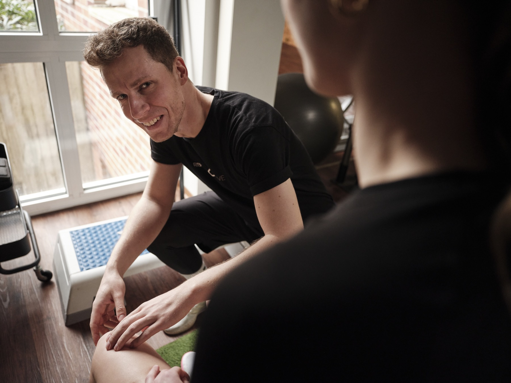
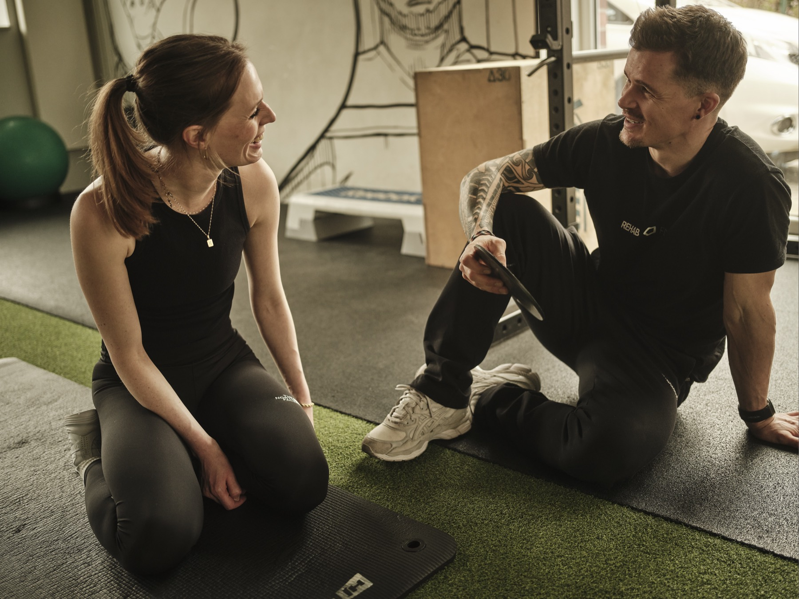
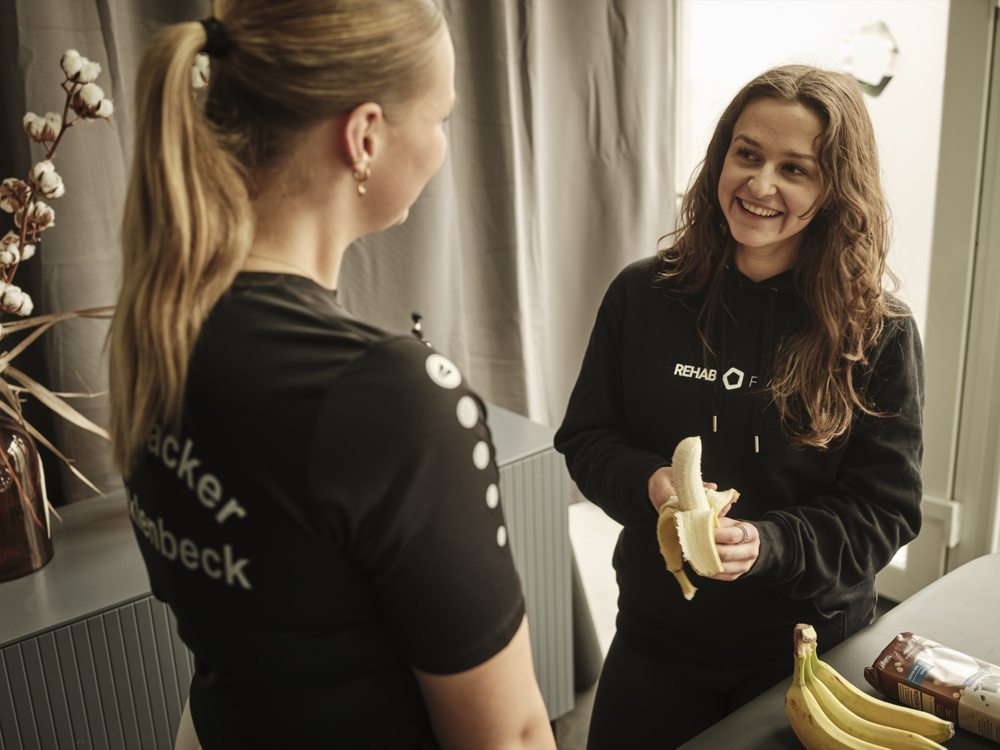
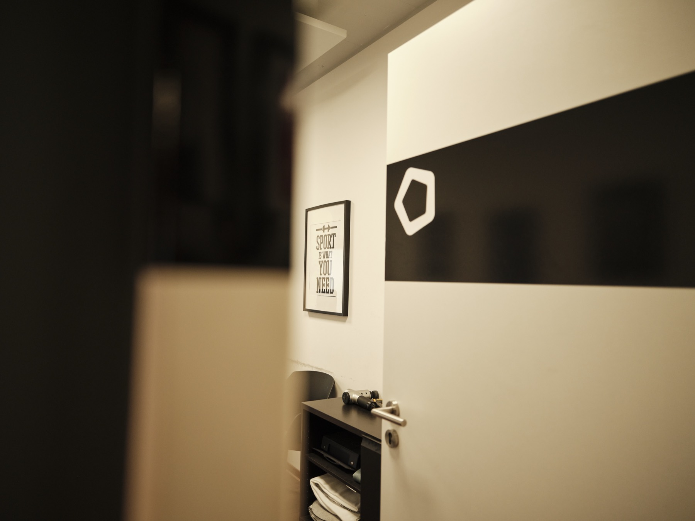

Zuschuss möglich
Zuschuss möglich
- Zertifizierte Expert:innen
- 100 % auf dich zugeschnitten
- Ohne Verbote, mit Freude
- Krankenkassen-Zuschuss möglich
Unverbindlich · keine Verkaufs-Show · wir sagen ehrlich, ob wir passen.
5,0100+ Google-Bewertungen REHAB FIVE-
01
Zertifizierte Expert:innen
Oecotrophologie · DGE-Zertifikat
-
02
Krankenkassen-Zuschuss
Bei ärztlicher Notwendigkeit
-
03
REHAB FIVE Qualität
Top-Bewertungen bei Google
-
04
Standort Münster
Weseler Straße 71
Unser Konzept · 01 — 06
Ernährung neu gedacht.
Vier Säulen. Ein Versprechen. Deine Ernährung im Mittelpunkt.
- 01 Wissenschaftlich fundiert Wir arbeiten nach aktuellen Leitlinien der DGE und Fachgesellschaften sowie nach aktueller Studienlage — keine Diät-Trends, keine Social-Media-Mythen, nicht TikTok-getrieben.
-
02

100 % individuell Wir berücksichtigen deine Lebenssituation, Essbiografie und körperlichen Voraussetzungen — kein Plan von der Stange. -
03

Ohne Verbote Essen darf Freude machen. Wir setzen auf nachhaltige Veränderung statt kurzfristige Verzichts-Diäten. -
04

Kassen-Zuschuss Bei vielen Indikationen 80 % Erstattung nach §43 SGB V, einzelne Kassen sogar bis 100 % — wir helfen beim Antrag. -
05

Im REHAB-FIVE-Ökosystem Therapie, Training, Diagnostik und Ernährung greifen ineinander. Bei Bedarf direkter Übergang in Physio oder Health Club. -
06

Ohne Zeitdruck 60–90 Minuten für die Anamnese. Wir hören zu, statt nur Pläne auszudrucken — persönlich und ruhig.
Gesundheits-DNA
10+ Jahre REHAB FIVE in Münster.
1:1-Beratung
In ruhiger Atmosphäre — kein Massengeschäft.
Programme
Sieben Programme. Ein Anspruch.
Egal, ob du eine medizinische Indikation hast, sportliche Ziele verfolgst, einen ZPP-zertifizierten Präventionskurs (Kassen-Erstattung bis 100 %) suchst oder einfach besser essen willst — wir haben das passende Programm für dich.
Alle Programme
7 Programme · Erstgespräch auf Anfrage
Zuschuss möglich
 Zuschuss möglich
Zuschuss möglich
Verdauung & Reizdarm
Reizdarm, Reflux, Laktose-, Fructose- oder Sorbit-Intoleranz, Zöliakie. Wir finden, was dir wirklich hilft. ab 95 € Bestseller
Bestseller
Sport & Performance
Energie für Training und Wettkampf. Muskelaufbau, Wettkampfvorbereitung, Recovery — abgestimmt auf deine Sportart. ab 95 €
Zuschuss möglichHerz & Stoffwechsel-Risiko
Bluthochdruck, Fettleber, erhöhte Blutfette, Gicht — wir reduzieren deine Risikofaktoren über den Teller. ab 95 €
SchwerpunktFrauengesundheit
Lipödem, PCOS, Wechseljahre, Endometriose, Schwangerschaft & Stillzeit. Hormone, Energie & Körper im Blick. ab 95 €
SchwerpunktAufbau & Vitalität
Untergewicht, Mangelernährung, Erschöpfung, Osteoporose, Aufbau nach Erkrankung. Wir bauen dich wieder auf. ab 95 €
Bis 100 % erstattetPräventionskurs · §20
ZPP-zertifizierter Kurs „Gesund essen im Alltag“. 8 Termine in der Gruppe — alle gesetzlichen Kassen erstatten bis zu 100 % (2× pro Jahr). 149 €Ziehen oder wischen7 Programme
Warum REHAB FIVE NUTRITION
Keine Beratung von der Stange.
Ein Konzept, das wirkt. Wir haben über zehn Jahre Gesundheits-Expertise in Münster — Therapie, Training, Diagnostik — und immer wieder gehört: „Was soll ich denn jetzt eigentlich essen?" Die Antwort gibt's jetzt unter einem Dach.
Wir sehen Ernährung als ganzheitliches Konzept für dein Wohlbefinden, nicht als kurzfristige Diät: klare Navigation statt Trend-Wahnsinn. Wir arbeiten nach DGE-Leitlinien und aktueller Studienlage, nehmen uns 60–90 Minuten für die Anamnese und hören zu, statt Pläne auszudrucken. Weil Therapie, Training, Diagnostik und Ernährung bei REHAB FIVE ineinandergreifen, ist der Übergang in Physio oder Health Club jederzeit möglich. Und bei vielen Indikationen übernimmt deine Kasse 80 % der Kosten nach §43 SGB V, einzelne Kassen bis zu 100 % — beim Antrag helfen wir.
Ablauf
In 4 Schritten zu Veränderung.
So einfach geht's — ein fester Ablauf vom Erstgespräch bis zur Evaluation, für nachhaltige Veränderung.
-
01 · Anamnese
60–90 Min Erstgespräch. Wir lernen dich kennen — deine Ess-Biografie, deinen Alltag, deine Diagnosen, deine Ziele.
-
02 · Plan
Wir entwickeln einen maßgeschneiderten Ernährungsplan, der zu dir passt — keine Standard-Tabellen, sondern alltagstauglich.
-
03 · Intervention
Wir setzen den Plan praktisch um — Schritt für Schritt, mit psychologisch durchdachter Motivation und engmaschiger Begleitung.
-
04 · Evaluation
Wir messen den Fortschritt, justieren den Plan und sorgen für nachhaltige Veränderung — weit über das Beratungsende hinaus.
Pakete
Drei Wege. Volle Transparenz.
Keine versteckten Kosten. Keine langen Bindungen. Du entscheidest, wie tief wir gemeinsam einsteigen.
Erstgespräch
Anamnese & Standortbestimmung
95 €
Mit Kassen-Bescheinigung: ab 19 € Eigenanteil
- 60–90 Minuten 1:1-Gespräch
- Ausführliche Anamnese
- Ess-Biografie & Ziel-Klärung
- Empfehlung zum weiteren Vorgehen
4er-Paket
Solides Fundament
320 € · 80 €/Termin
Mit Kassen-Bescheinigung: ab 64 € Eigenanteil
- 1 × Anamnese + 3 × Folgetermine
- Individueller Ernährungsplan
- 80 % Kassen-Erstattung möglich
- Folgetermine online möglich
- 12 Monate Gültigkeit · Ratenzahlung möglich
6er-Paket
Nachhaltige Veränderung
450 € · 75 €/Termin
Mit Kassen-Bescheinigung: ab 90 € Eigenanteil
- 1 × Anamnese + 5 × Folgetermine
- Individueller Ernährungsplan
- 80 % Kassen-Erstattung möglich
- Folgetermine online möglich
- Engmaschige Begleitung (chronisch)
- 12 Monate Gültigkeit · Ratenzahlung möglich
Eigenanteils-Beispiele bei 80 % Kassen-Erstattung (§43 SGB V) und ärztlicher Notwendigkeitsbescheinigung. Einzelne Kassen erstatten bis 100 %. Indikationen: Adipositas, Diabetes Typ 2, Bluthochdruck, Zöliakie u. v. m. Wir unterstützen beim Antrag.
Gratis Download
Erstattet meine Kasse die Beratung?
Hol dir den REHAB FIVE Kassen-Check (PDF): Welche Diagnose wird erstattet? Welche Kasse zahlt wie viel? Was muss auf der ärztlichen Bescheinigung stehen? Inklusive Mustertext für deinen Hausarzt.
- Erstattungs-Tabelle aller GKV
- Indikationen-Übersicht (§43 SGB V)
- Muster-Antragstext
- Checkliste Hausarzttermin
Indikationen
Bei diesen Diagnosen helfen wir gezielt.
Bei den folgenden Indikationen ist eine ärztlich verordnete Ernährungstherapie häufig erstattungsfähig — wir beraten dich evidenzbasiert nach aktuellen Leitlinien.
- E66Adipositas / Übergewicht
- E43–46Untergewicht / Mangelernährung
- E11Diabetes mellitus Typ 2
- I10Hypertonie / Bluthochdruck
- E78Dyslipoproteinämien
- K76.0Fettleber (NAFLD/MASLD)
- E79.0Hyperurikämie / Gicht
- M80–82Osteoporose
- K21Reflux / GERD
- K58Reizdarm-Syndrom (RDS)
- M05–06Rheumatoide Arthritis
- E73Laktose-Intoleranz
- E74.1Fructose-Malabsorption
- E74.3Sorbit-Intoleranz
- K90.0Zöliakie
- E88.2Lipödem
- E28.2 / N80PCOS / Endometriose
- Z32–39Schwangerschaft & Stillzeit
- SportSport- & Performance-Ernährung
- N95Wechseljahre
- VeganVegane / vegetarische Ernährung
Klicke auf eine Indikation für den ausführlichen Artikel mit Quellen. Deine Diagnose ist nicht dabei? Sprich uns an — wir beraten zu über 50 Indikationen.
Häufige Fragen
Alles, was du wissen willst.
Übernimmt die Krankenkasse die Ernährungsberatung?
Bei vielen Indikationen (z. B. Adipositas, Diabetes Typ 2, Bluthochdruck, Zöliakie) ist ein Krankenkassen-Zuschuss möglich. Die gesetzlichen Kassen erstatten typischerweise 80 % der Kosten nach §43 SGB V — bei einigen Kassen bis zu 100 %. Du brauchst eine ärztliche Notwendigkeitsbescheinigung; wir unterstützen dich beim Antrag.
Was kostet eine Ernährungsberatung?
Das Erstgespräch (60–90 Min) kostet 95 €, ein 4er-Paket 320 €, ein 6er-Paket 450 €. Bei ärztlicher Notwendigkeitsbescheinigung übernehmen gesetzliche Kassen typischerweise 80 % nach §43 SGB V — einzelne Kassen bis zu 100 %. Eigenanteil entsprechend gering.
Wie viele Termine brauche ich?
Eine typische Beratung umfasst 4–6 Termine über mehrere Monate, beginnend mit einer ausführlichen Anamnese (60–90 Min) und gefolgt von Folgeterminen zur Anpassung und Evaluation. Bei chronischen Indikationen kann eine längere Begleitung sinnvoll sein.
Welche Qualifikation haben die Berater:innen?
Unser Team besteht aus zertifizierten Oecotropholog:innen und DGE-anerkannten Ernährungsexpert:innen. Wir arbeiten ausschließlich evidenzbasiert nach aktuellen Leitlinien — keine Trend-Diäten, keine Social-Media-Mythen.
Was unterscheidet euch von einer Diät-App?
Wir betrachten deine Lebenssituation, Essbiografie und körperlichen Voraussetzungen. Eine App gibt dir Tabellen — wir geben dir alltagstaugliche Lösungen, psychologische Unterstützung und einen Plan, den du wirklich durchziehen kannst. Ohne Verbote, ohne Zwänge.
Brauche ich eine ärztliche Überweisung?
Für die Beratung selbst brauchst du keine Überweisung. Wenn du einen Krankenkassen-Zuschuss möchtest, benötigst du eine ärztliche Notwendigkeitsbescheinigung — die holst du beim Hausarzt.
Bietet ihr auch Online-Beratungen an?
Ja. Folgetermine sind auf Wunsch bequem als Video-Beratung möglich. Das Erstgespräch findet idealerweise vor Ort statt — wir lernen dich besser kennen.
Wo befindet sich REHAB FIVE NUTRITION?
Unser Beratungsraum liegt in der Weseler Straße 71, 48151 Münster — ruhige 1:1-Atmosphäre, gut erreichbar mit ÖPNV und Auto. Folgetermine sind auch online möglich.
Lies dich tiefer ein.
Aus unserem Blog — Hintergründe, Therapie-Ansätze und was die Forschung sagt.
Blog
Krankenkassen-Zuschuss zur Ernährungsberatung — was du wissen musst
Welche Indikationen werden erstattet, wie hoch ist der Zuschuss, was brauchst du vom Arzt?
Artikel lesen → Indikation · K58Reizdarm & Ernährung: Was wirklich hilft
Low-FODMAP, Probiotika, Stressachse — evidenzbasiert mit 12 wissenschaftlichen Quellen.
Artikel lesen → BlogSport-Ernährung: Energie ohne Kalorienzählen
Was Athlet:innen wirklich brauchen — Makronährstoffe, Timing, Recovery in der Praxis.
Artikel lesen →